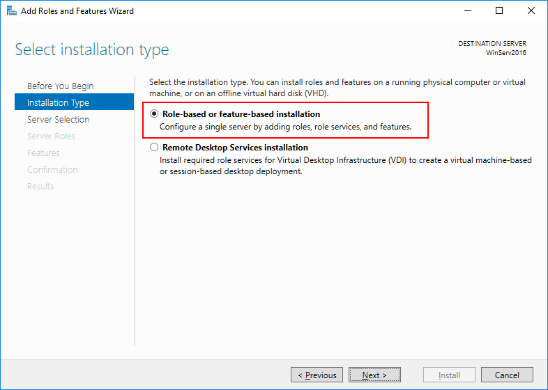
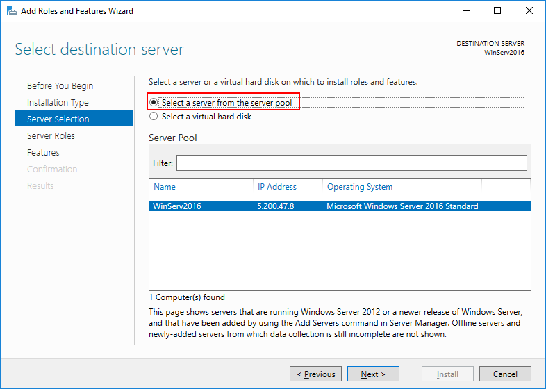

Администрирование сетевых ОС. Служба каталоговы
Установка Active Directory Domain Service
2/10Откройте Диспетчер серверов и выберете пункт «Add roles and features».

В качестве типа установки укажите Role-based or feature-based installation.
Выберете ваш сервер из пула.
В следующем окне отметьте Active Directory Domain Services (Доменные службы Active Directory).

Добавьте компоненты.

Установите все отмеченные компоненты на VPS с помощью кнопки Установить.